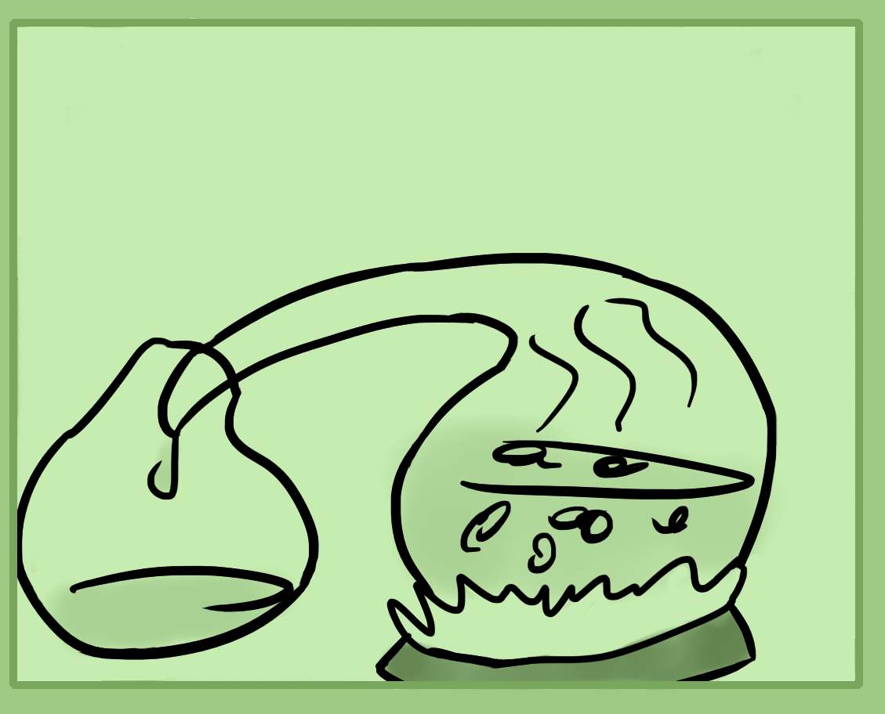
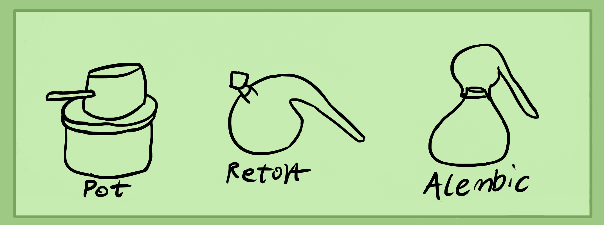
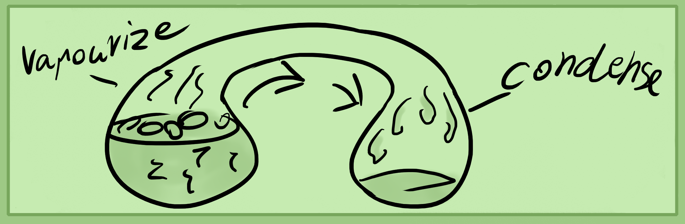
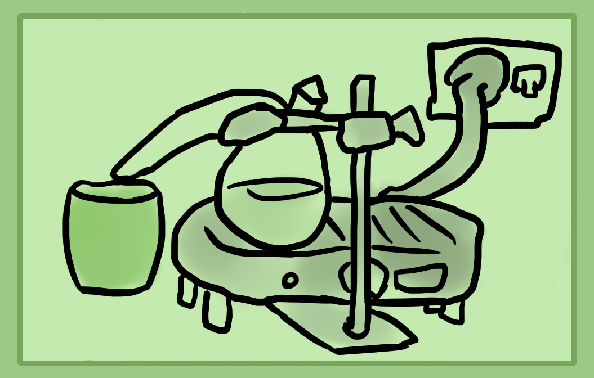
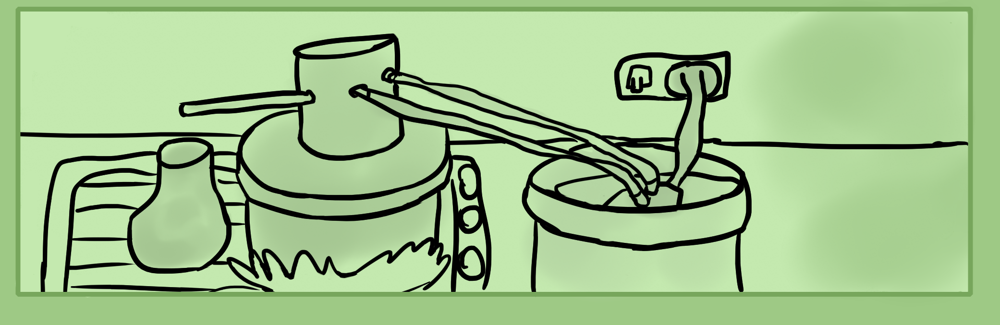
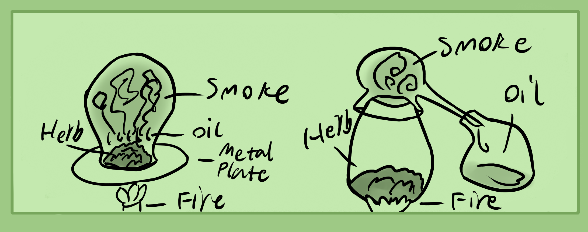
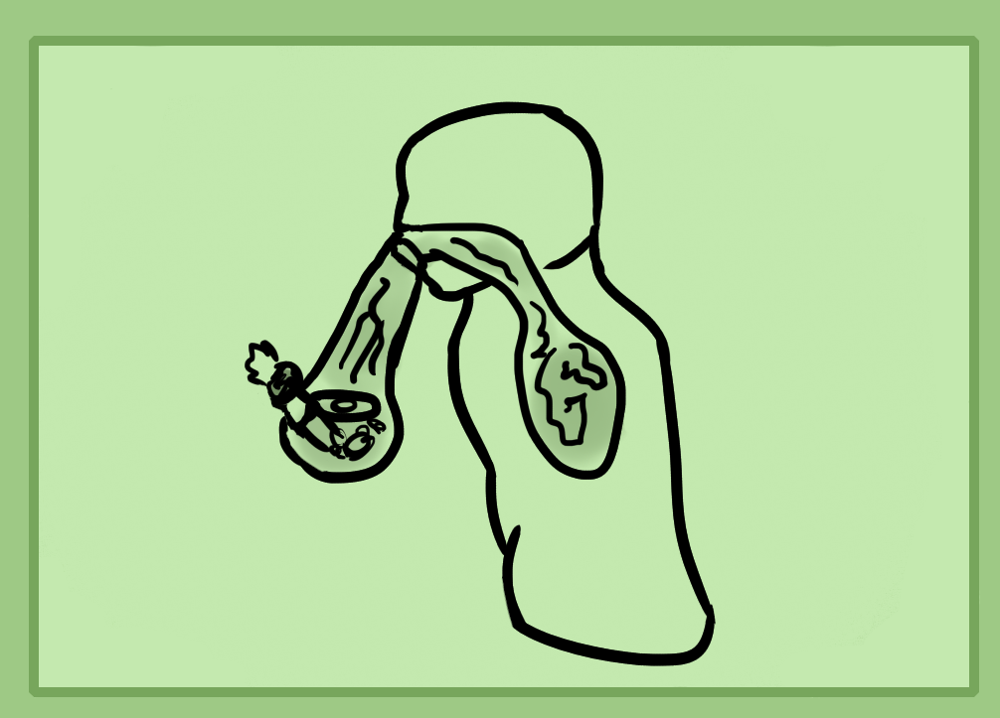
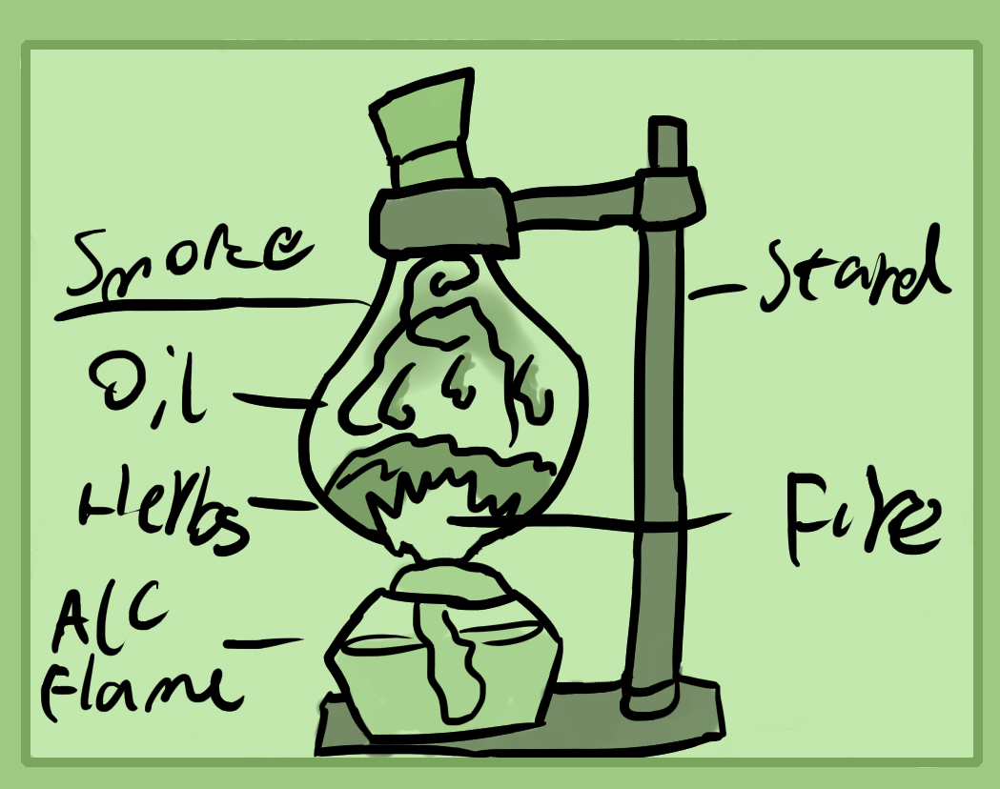

Wet Distillation
Distillation means to heat a matter up and to extract the refined parts. First you will pull the most subtle parts of it and then the more dense.
Take for example alcohol distillation. First when a beer or wine is heated it gives off the aroma or aromatic oils and also the alcoholic spirit - ethanol. This alcohol is usually a bit impure and has water in it in the first few distills. Next comes the liquids which form most of this beer or wine. They are usually quite sour and aromatic. Then finally after that you will start to distill the actual resin or densest liquid parts of your beer/wine which is a plant resin from either the grapes, fruit or grain.
Hence there are four main parts that can be distilled. 1. Essential oil/aromatic oils, 2. Volatile spirit, 3. Waters, 4. Resins.
Wet distillation is more interested in 1-3 while dry is interested in 4.
Type of Distillers
There are many different types of distillers. In the modern world, large column coolers and boilers are used to extract chemical liquids. Usually an amateur alcohol distiller uses a pot distiller as they're cheap and effective enough while if you have a lot of money you can buy a small column one.
Glass distillers like retorts and alembics, pelicans, etc are rarely used but highly valued by alchemists as they are the best for research purposes, work well once you're experienced in them and are lovely pieces of equipment.
I recommend you buy a cheap 10-25 litre pot still for around 100-200$ and a cheap 500 ml retort for about 40-70$. Don't pay too much as some sellers try to charge you hundreds for glassware.
So what are each used for? Both pot stills and column ones are both used for alcohol or water distilling primarily. You can also use them for essential oils and even some chemicals but it's riskier and is better to stick with lab glassware for chemical operations.
Retorts are used for mostly any chemical operation which does not need intense cooling. Instead you use some cooled chemical distillers for that. Look up "essential oil glass distillation kit" If you want cheap chemical glassware. It can run you around 100-200$ for a 500ml kit. I personally think that testing out alcohol and water distilling in a retort is a great way to learn about how water condensing and distillation works. Even if you wont use it for large scale alcohol distilling, stick to the pot and column still for that.
The last major piece of alchemical glassware is the alembic which has a little glass cap which allows for cooling. This piece is good for both wet and dry distilling. But, they are incredibly difficult to buy nowadays and can cost hundreds of dollars.
How Distillation Works
The simple idea of how it works is that simply you have water in one glass flask which is being heated by a flame or heat source. This water vaporises into steam and travels along a glass tube which is connected to another flask. Flask 2 is cooled either by air, water or ice hence the steam wants to condense back into water. So remembering the laws of natural philosophy which is that when something is heated it wants to rise and spiritualise, then when it's cooled it wants do condense and become physical again.
We simply apply this same principle to different solids and liquids. Then extract their differing densities through modulation of heat and distillation order.
How to Water Distill
First I'll teach you how to use a retort and then a potstill. Either start with distilling water to try it out and then you can distill your fermented sugar wine for ethanol purposes.
You either need a hotplate which cost around 30-50 dollars, alcohol burner or some other kind of simple heating which works with a retort. Regular stoves don't work too well unless they're very small. You also need some chemistry clamps and stand in order to hold the retort unless it has a flat base. A little set costs around 20$.
Now once you've set up your retort on the heat source, next is to place a small cup or another flask near its exit head, where distilled liquid comes out of. After that, use a funnel to pour in some liquid. Only fill them half way, elsewise the liquid bubbles up and out of the retort.
When everything is set up and stable, turn on your heat source. Set it to low and wait for the liquid to warm. You'll want to do this slowly until you get more experience. Slowly, turn up the heat until your liquid starts to bubble and vaporize. Turn the heat down if steam comes out of the exit tube.
Your task here is to learn how to perfect your temperature modulation skills until distilled water or liquor comes out. This can be difficult at first and seem impossible, but as long as your retort is functional, it will happen.
Once you've achieved this you can modulate the temperature to make liquid distill faster, making sure that it does not steam. You may need to put an ice bowl under your cup if you push the temperature too far though.
Remember that alcohol distills at a lower temperature than water.
Eventually liquid will stop condensing and running down even though there is water in the retort body. At least if you're distilling alcohol. This means that you've distilled all of the light waters or alcohol. If you increase the heat, heavier water - water will distill.
Once finished, turn off the heat and allow the retort to cool. Take your extracted alcohol and put it in a bottle as to not let it escape into the air.
Now onto potstills. These are what you'll use to distill litres of alcohol in order to make tinctures or experiment with.
You may want an aquarium pump and bucket or sink full of icy water for this as a potstill needs a cyclical flow of cold water. A full bucket of icy water is good enough for one cycle of distilling.
Start by filling your still around half to 2/3rd full with fermented sugar wine. I recommend buying a 20 litre plastic fermenter to make this and some sugar yeast.
Seal up your potstill with its lid and make sure all of the copper pipes are connected. Connect the water tubes to your aquarium water filter and pot still and allow it to cycle through. You need to modulate the in and out flow/pressure of water to make sure that the water cooler does not over or under flow, else wise water gets everywhere or it does not cool the alcohol enough. Make sure the water flow is perfect before turning on the heat.
Put your potstill on a flame or other stove and turn on the heat. Start out with a reasonably hot heat to get your wine to boil and when it starts to boil, turn it down to a simmer on low heat. Also make sure to have a bottle or flask ready to gather your distilled alcohol.
If all has gone well in about 10 minutes of heating, alcohol should start to come out of the copper tube. Make sure to collect and toss the first 20 or so ml. This is where all of the methanol, acetone and waste solvents are that arise from brewing.
Periodically taste the alcohol coming out to make sure it's not water. If it's water, then you're done distilling and can turn off the heat. Also make sure to adjust and keep an eye on your water filter cycle to make sure there's no leaks, overheating or a lack of flow.
This is how to distill alcohol for research and alchemical purposes.
Dry Distillation/Sublimation
Next is on dry distilling, or sublimation. Sublimation in chemistry is defined as changing something from the solid form to a gas. I see it as making something "smoke".
Above is an image of simple sublimation and distillive sublimation.
The best example I can give for sublimation is a little crude. Imagine someone smoking out of a pipe or water bong. Herbs sit in a bowl which is connected by a glass stem into either water or to your mouth. You burn these herbs while creating an air pressure seal through inhaling which pulls air from the burning herb into the chamber of the smoking device, then into your mouth and lungs.
Once smoke has accumulated in the lungs it begins to partly condense into a resinous tar like oil. Only part of it though as it does not cool enough to properly condense. Maybe around 90% of the smoke does not condense.
Similarly anyone who's used smoking instruments or cigarettes know that black oils fill the tubes or the filter of a cigarette. This dark oil is what you want to acquire from sublimation.
Closed Flask Sublimation
This is an experiment to understand sublimation further. How you perform it is that you need a sealable piece of cookware that can handle high heat and wont break or explode. I use a 500ml boiling flask that has a glass stopper. You also need a heating element like an alcohol fire or hot plate and a chemistry stand to hold your flask. Along with herbs or other ingredients, ground or powdered.
Once it's all set up start your heating element and observe as the herbs roast, vaporizing their essence.
Eventually this essence in the form of herbal oil will condense and cool along the middle side of the flask. This is a very fascinating phenomena to watch.
Thus far I haven't found a way to use this process in order to gather the oil but possibly you could with a 1-10 litre flask and using hundreds of grams of herbs then using high percentage alcohol and heat to dissolve the dried oils on the side of your flask which appear.
Once there are no more oils or interesting effects that form, turn the heat off and let everything cool. Cleaning is somewhat difficult with this experiment as you'll need to smash the roasted herbs gently with a chopstick to get them out and scrub your flask with a pipe, bong or glassware cleaner.
Sometimes high percent alcohol and salt can work well as a cleaning agent to dissolve stuck oils. Otherwise heating water or vinegar in the flask can also get rid of them.